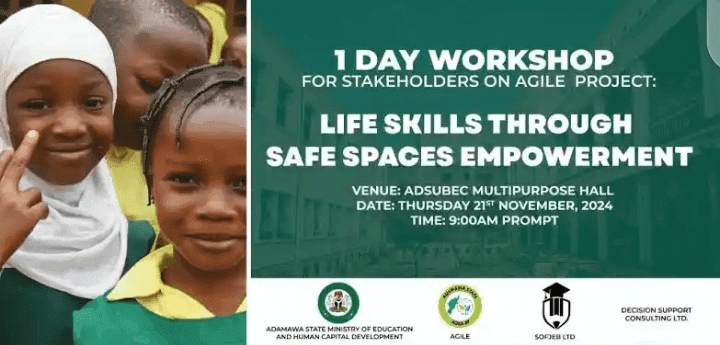

Shirin Ilimin Yarinya
Ƙarfafa 'Yan Mata ta Hanyar Ilimi
Manufarmu: Tallata da goyon bayan ilimi ga 'yan mata a Yola da al'ummomin kewaye.
Bayani game da Shirin
Shirin wayar da kan ilimin yarinya wani tsari ne cikakke da aka tsara don ƙara samun damar ilimi ga 'yan mata da tallata daidaito tsakanin jinsi a fannin ilimi a fadin Yola.

Manyan Shirye-shirye
- Tallafin Karatu: Taimakon kudi don ilimi
- Shawara: Jagoranci daga mata masu nasara
- Wayar da Kai ga Al'umma: Kamfen ɗin wayar da kai
- Ci gaban Kwarewa: Karin shirye-shiryen horo
Amfanin Shirin
- Kayan ilimi kyauta
- Zaman jagorar sana'o'i
- Ƙungiyoyin tallafin iyaye
- Shawarwari na ilimi
Yadda Ake Shiga
- Rajista: Lokutan bude rijista
- Sharuɗɗa: Ka'idojin cancanta na asali
- Tallafi: Albarkatun da ake samu
- Tuntuɓi: Masu tsara shirin